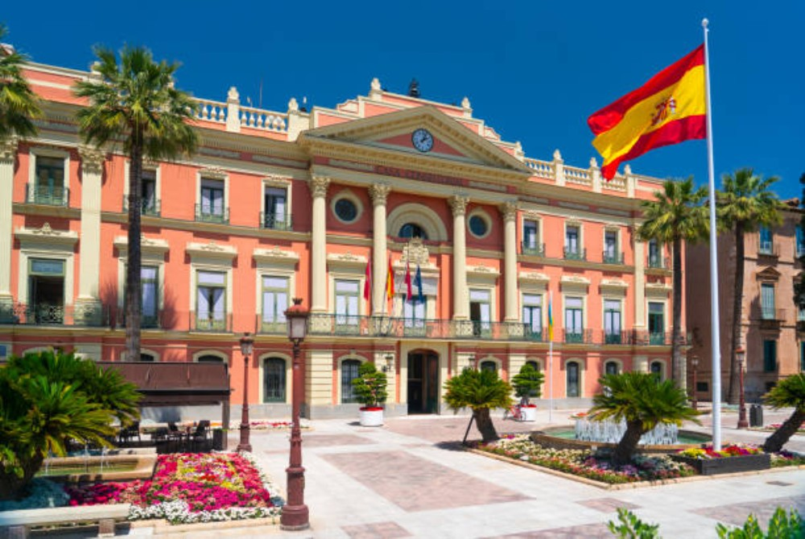
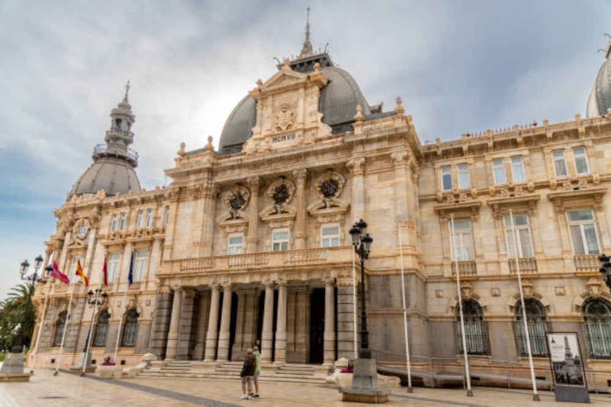
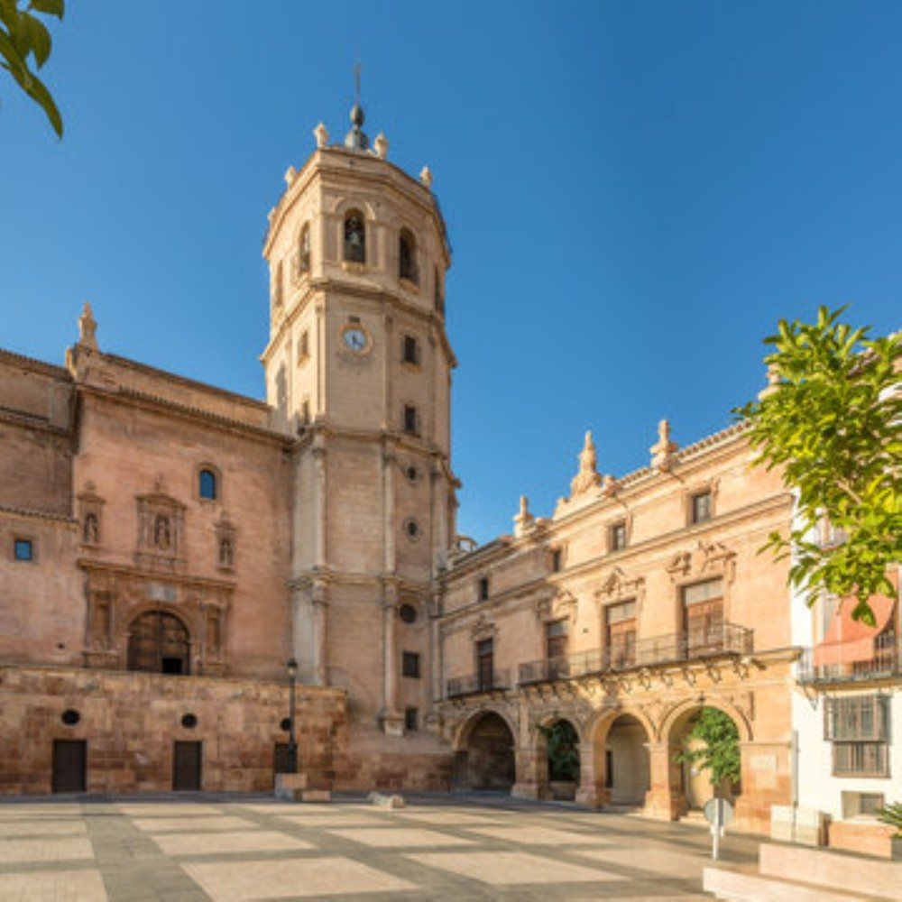
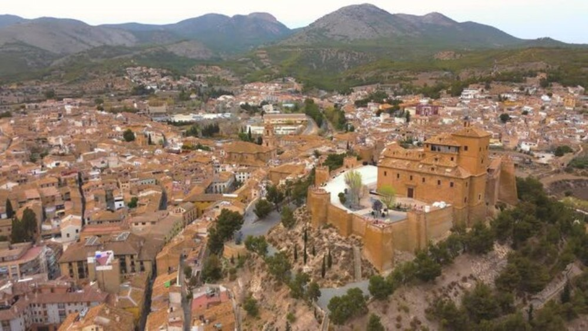
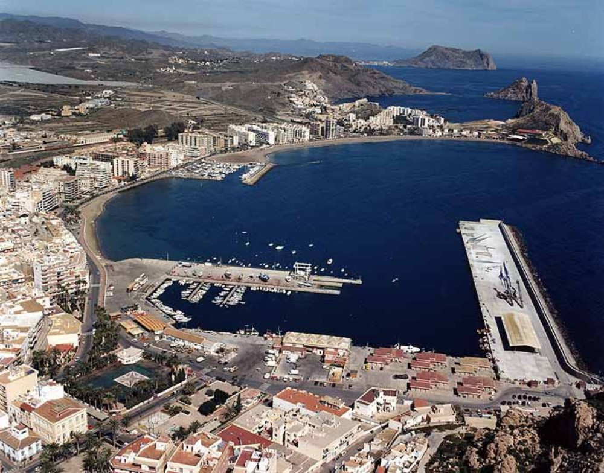
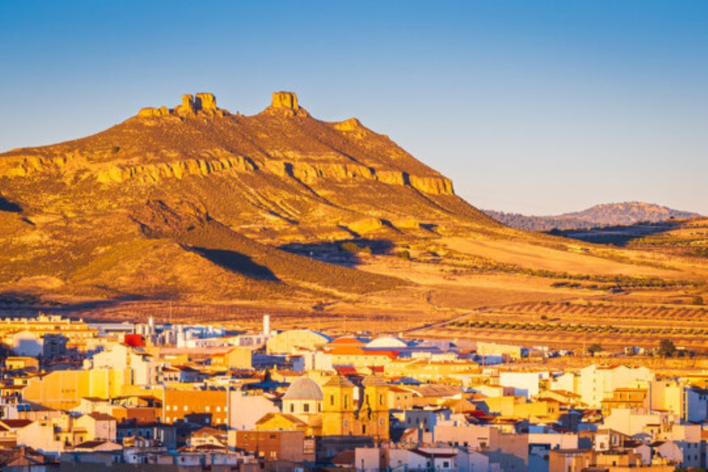

La Catedral de Santa María y la Plaza del Cardenal Belluga brillan en el corazón de la Huerta del Segura.
Turismo y Patrimonio · Región de Murcia

La Catedral de Santa María y la Plaza del Cardenal Belluga brillan en el corazón de la Huerta del Segura.

Tres mil años de historia junto al Mediterráneo: Teatro Romano, puerto natural y arquitectura modernista.

La Ciudad del Sol destaca por su imponente fortaleza medieval y su Semana Santa declarada de Interés Turístico Internacional.

Ciudad Santa jubilar coronada por el Santuario de la Vera Cruz y rodeada por las Fuentes del Marqués.

Más de 28 kilómetros de costa con calas vírgenes como Carolina y Cocedores, además de su emblemático Carnaval.

Tierra de vinos con Denominación de Origen Protegida, paisajes de montaña y patrimonio monumental.